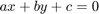
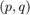
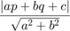
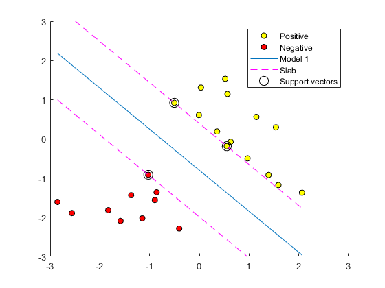
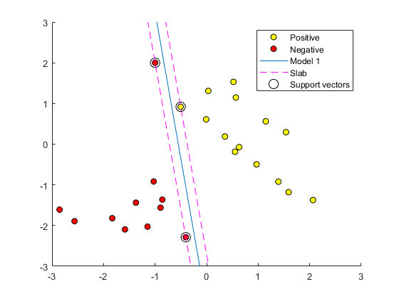

Exercise 3 - Support Vector Machines
Submitted by Prasannjeet Singh
Contents
Q1. Calculating the perpendicular distance:
If  is the equation of the hyperplane, and one of the support vector point is , then the distance was calculated by:

This has been implemented in the file mmcPlot.m at the designated place.
Trying to run the function after the implementation of distance formula:
load mmcData.mat;
hFig = figure(2);
mmcPlot(X,y);
snapnow; close(hFig);
Minimum found that satisfies the constraints. Optimization completed because the objective function is non-decreasing in feasible directions, to within the default value of the optimality tolerance, and constraints are satisfied to within the default value of the constraint tolerance.
Q2. Appending [-1 2]
X(end+1,:) = [-1 2]; y(end+1) = -1; hFig = figure(2); mmcPlot(X,y); snapnow; close(hFig);
Minimum found that satisfies the constraints. Optimization completed because the objective function is non-decreasing in feasible directions, to within the default value of the optimality tolerance, and constraints are satisfied to within the default value of the constraint tolerance.
Observation
As we included the new point (-1,2) and classified it as -1 (red), the window to create a hyperplane that separates the two sets became very narrow. Moreover, this also changed the support vector for the negative (red group). Additionally, it also shows us that Support Vector Machies possess the property of non robustness in some cases, if the new training points are placed near the separating hyperplane. However if the new training points are placed farther away from the hyperplane, it wouldn't have made any difference.
It is also worth noting that had the new point been classified as +1 (yellow), probably there wouldn't have been much difference in the hyperplane.